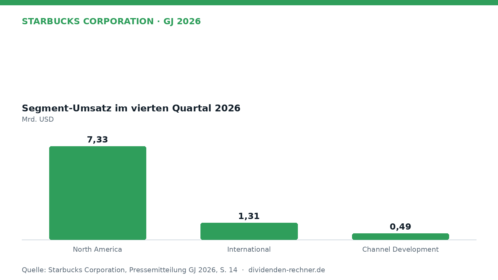

Jahresbericht

Starbucks steigert Umsatz im Geschäftsjahr 2026 auf 37,9 Milliarden Dollar
$SBUX
Starbucks legt den Geschäftsbericht für das Jahr 2026 vor. Der Umsatz legte zu, während das Management den Umbau der China-Sparte vorantreibt.

Kurz gesagt
Umsatz: 37,9 Mrd. USD (2,0 %)
Gewinn: 2,5 Mrd. USD (36,1 %)
- Umsatzplus: Der Konzernumsatz kletterte im Gesamtjahr leicht von 37,2 auf 37,9 Milliarden US-Dollar.
- China-Deal: Ein Sondergewinn aus der Umstellung des China-Geschäfts auf ein Joint-Venture entlastete das Ergebnis.
- Margendruck: Höhere Betriebskosten und Restrukturierungen bremsen die operative Marge im Jahresverlauf.
Starbucks wächst im Gesamtjahr 2026 leicht und richtet das China-Geschäft neu aus
Im abgelaufenen Geschäftsjahr 2026 erzielte Starbucks einen Konzernumsatz von 37,9 Milliarden US-Dollar, was einem Anstieg von 2,0 % gegenüber dem Vorjahr entspricht. Der Nettogewinn stieg deutlicher auf 2,5 Milliarden US-Dollar. Getrieben wurde das Geschäft vor allem durch den Heimatmarkt Nordamerika, während die Umstrukturierung im internationalen Segment und der China-Umstieg das Bild prägten.

Eigene Darstellung nach Daten aus: Starbucks Corporation, Jahresbericht GJ 2026 vom 2026-10-29 · Original.Das Geschäftsjahr im Rückblick: China-Deal und Filialnetto
Das internationale Geschäft stand im Zeichen des Umbaus. Die Starbucks-Handelsaktivitäten in China wurden in ein Lizenz-Joint-Venture überführt, was zu einem Sondergewinn vor Steuern von 536,3 Millionen US-Dollar führte. Global stieg die Zahl der Kaffeebars um 617 Standorte auf insgesamt 41.607 Kaffeehäuser. Im Heimatmarkt Nordamerika wuchsen die Umsätze im Gesamtjahr auf 28,9 Milliarden US-Dollar. Konzernchef Brian Niccol betonte die Bedeutung der Rückbesinnung auf den Kundenservice:
„Wir hatten ein fantastisches Quartal und ein großartiges Jahr, angetrieben von unserem Fokus auf die Grundlagen.“
— Brian Niccol, Vorstandschef (aus dem Englischen übersetzt)
Dividende und Deckung durch den Cashflow
Die Aktionäre erhalten eine ungebrochene Ausschüttung. Die hochgerechnete Jahresdividende liegt bei 3,15 US-Dollar je Aktie. Bezogen auf den Gewinn der letzten vier Quartale von 2,21 US-Dollar je Aktie ergibt sich eine rechnerische Ausschüttungsquote von 143 %. Deutlich entspannter sieht es beim Cashflow aus: Der Free Cashflow der letzten vier Quartale lag bei 3,6 Milliarden US-Dollar, wovon 2,8 Milliarden US-Dollar als Dividende ausgezahlt wurden. Das entspricht einer Deckungsquote von 77 %. In den zehn Jahren bis 2025 wurde die Dividende ununterbrochen gesteigert, mit einem jährlichen Wachstum von 7,8 %.
Verschuldung und Investitionen im Wandel
Die Nettoverschuldung des Konzerns stieg im Laufe der Jahre kontinuierlich an und erreichte zuletzt 23,4 Milliarden US-Dollar im Jahr 2025. Das Verhältnis der Nettoverschuldung zum EBITDA kletterte auf den Faktor 4,3. Gleichzeitig zeigte sich bei den Investitionen (Capex) eine Entlastung: Nach 2,3 Milliarden US-Dollar im Vorjahr sanken die Investitionen im abgelaufenen Geschäftsjahr 2026 auf 1,3 Milliarden US-Dollar.
Bewertung und Marktlage
Bei einem Aktienkurs von 105,51 US-Dollar errechnet sich eine Dividendenrendite von 3,0 % und ein Kurs-Gewinn-Verhältnis (KGV) von 47,7. Die Aktie spiegelt damit eine hohe Erwartungshaltung der Anleger an den laufenden Umbau unter dem Namen „Back to Starbucks“ wider.
Ausblick auf das Jahr 2027
Für das kommende Geschäftsjahr 2027 rechnet das Management mit einem leichten Rückgang der Umsätze um rund 1 %, was maßgeblich auf den Wegfall der direkten China-Konsolidierung zurückzuführen ist. Gleichzeitig plant der Konzern den globalen Aufbau von rund 1.200 neuen Kaffeehäusern. Als Risiken bleiben volatile Rohstoffpreise für Kaffee und Milch sowie anhaltender Kostendruck im Personalbereich bestehen.
Dividendenkennzahlen im Überblick (eigene Berechnung)
| Kennzahl | Wert | Rechenweg |
|---|---|---|
| Dividendenrendite | 3,0 % | 3,15 USD ÷ Kurs 105,51 USD |
| Ausschüttungsquote (Ergebnis je Aktie) | 143 % | 3,15 USD ÷ 2,21 USD (4 Quartale) |
| KGV | 47,7 | Kurs ÷ 2,21 USD |
| Dividenden / Free Cashflow (12 Monate) | 77 % | 2.811 ÷ 3.642 Mio. USD |
| Free Cashflow, Geschäftsjahre (Mrd. USD) | 2022: 2,6; 2023: 3,7; 2024: 3,3; 2025: 2,4; 2026: 3,7 | Kapitalflussrechnung laut FMP |
| Nettoverschuldung / EBITDA, Jahresende | 2022: 3,4; 2023: 2,8; 2024: 3,2; 2025: 4,3 | Bilanz und Gewinn- und Verlustrechnung laut FMP |
| Dividendenerhöhungen in Folge | 10 Jahre | Kalenderjahressummen bis 2025 |
| Dividendenwachstum 2020–2025 | 7,8 % p. a. | Kalenderjahressummen |
Quelle: Starbucks Corporation, Jahresbericht GJ 2026 vom 2026-10-29; Kurs- und Dividendendaten: Financial Modeling Prep. Rechenwege eigene Berechnung. Keine Anlageberatung.
Hinweis: Dieser Text dient der allgemeinen Information und ist weder Anlage-, Steuer- noch Rechtsberatung. Kapitalanlagen sind mit Risiken verbunden, bis hin zum Totalverlust.